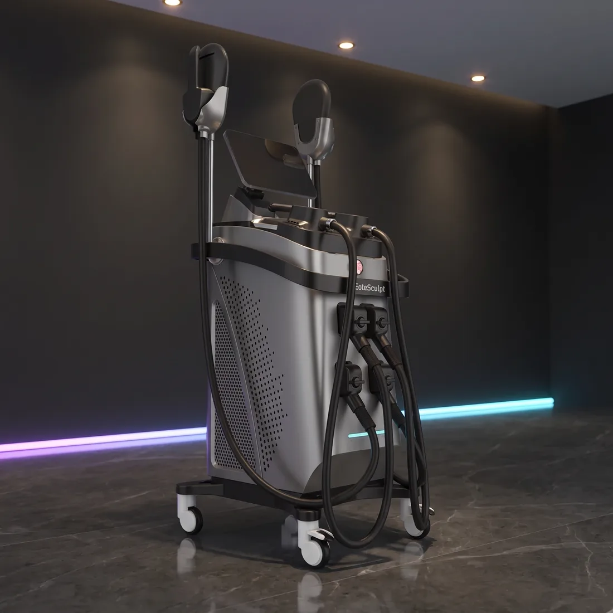
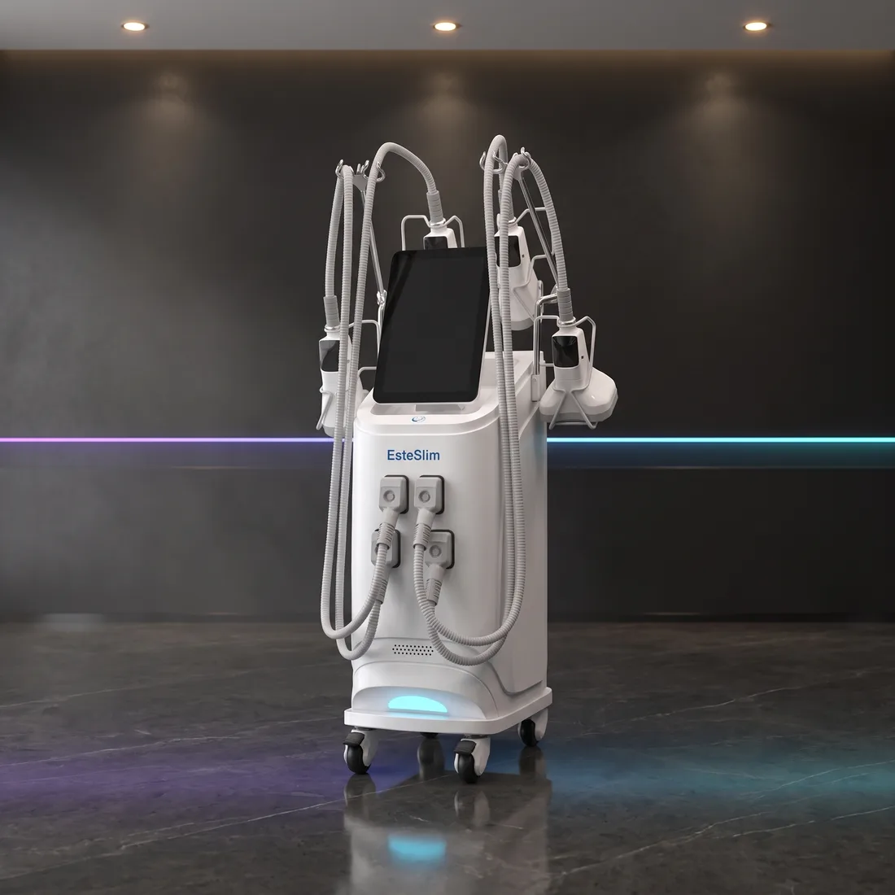

T-Shape 2
T-Shape 2, yüz ve vücut şekillendirmede kombin tedavi protokolleri sunan yüksek teknolojiye sahip profesyonel bir estetik cihazıdır. Estezone Medikal güvencesiyle Türkiye’de profesyonellerle buluşan T-Shape 2; klinikler, güzellik merkezleri ve estetik uygulama alanları için etkili, konforlu ve gelişmiş bir çözüm sunar.
Hekim sorumluluğunda kullanılması gereken tıbbi lazer ve invaziv sistemler. Bu cihazlar yalnızca ruhsatlı sağlık kuruluşlarına satılabilir.
Bu bir ön bilgilendirmedir. Kesin durum; cihazın kullanım amacı beyanı, ÜTS kaydınız ve işletmenizin ruhsat tipiyle birlikte değerlendirilir. Teklif aşamasında birlikte teyit ederiz.Demo talebi, kurulum koşulları ve finansman seçenekleri için arayın: +90 312 466 66 86
T-Shape 2, yüz ve vücut şekillendirmede kombin tedavi protokolleri sunan yüksek teknolojiye sahip profesyonel bir estetik cihazıdır.
Uygulama alanları
Estezone Medikal güvencesiyle Türkiye’de profesyonellerle buluşan T-Shape 2; klinikler, güzellik merkezleri ve estetik uygulama alanları için etkili, konforlu ve gelişmiş bir çözüm sunar.
Bipolar radyofrekans, LLLT lazer, dinamik vakum teknolojisi, mesoporasyon ve mesosphere başlıklarını bir araya getiren cihaz; vücut şekillendirme, selülit görünümünün iyileştirilmesi, lenfatik drenaj, cilt sıkılaştırma ve kas gevşetme odaklı uygulamalarda profesyonel kullanım için tasarlanmıştır.
T-Shape 2’nin ileri teknoloji yazılımı sayesinde hasta süreçleri seans bazlı olarak takip edilebilir. Termal görüntüleme kamerası ve yazılım desteğiyle her kullanıcıya özel tedavi protokolleri belirlenebilir, uygulama verileri sistematik olarak toplanabilir ve dokunmatik ekran üzerinden güncellenebilir.
Bu yapı, profesyonellere daha kontrollü, izlenebilir ve kişiye özel bir uygulama deneyimi sağlar.
Kalite ve üretim
T-Shape 2, FDA sertifikasyonuna sahip teknolojisiyle güvenlik ve kalite açısından önemli testlerden geçmiştir. Belgelere göre cihazın teknolojisi; selülit görünümünün azaltılması, dolaşımın desteklenmesi, kas ağrısı ve spazmlarının azaltılması gibi alanlarda sertifikalı kullanım kapsamına sahiptir.
Verimlilik ve hasta konforu
Estezone Medikal olarak, estetik ve güzellik sektöründeki uzun yıllara dayanan deneyimimizle kliniklerin, hastanelerin ve profesyonel estetik merkezlerinin ihtiyaç duyduğu ileri teknoloji cihazları sunuyoruz. T-Shape 2 ile amacımız; en son teknolojiyi erişilebilir kılmak, profesyonellere yüksek performanslı ve uzun ömürlü çözümler sağlamak, kullanıcı deneyimini güven, kalite ve konforla buluşturmaktır.
Künye
Teknik özellikler
| Marka / Model | T-SHAPE 2 |
| Üretici / Başvuru Sahibi | B&M S.R.L. Marketing Nel Benessere / Baldan Group |
| FDA 510(k) Numarası | K231092 |
| FDA Sınıfı | Class II |
| FDA Ürün Kodları | NUV, PBX |
| Kullanım Statüsü | Prescription Use / profesyonel kullanım |
| Ana Teknolojiler | LLLT lazer, bipolar radyofrekans, vakum, mekanik masaj, motorize roller / sphere başlıklar |
| Lazer Dalga Boyları | 650 nm ve 980 nm |
| Lazer Sınıfı | Class 3R |
| Maksimum Lazer Kaynak Gücü | 100 mW |
| Lazer Güç Yoğunluğu | Maksimum 10 mW/cm², her diyot için |
| Radyofrekans Tipi | Bipolar RF |
| RF Frekansları | 500 kHz, 1 MHz, 1.5 MHz, 2 MHz |
| RF Gücü | peak RF power: 150 W |
| RF Yoğunluk Limiti | Maksimum 10 mA/cm², elektrot başına |
| Vakum Basıncı | FDA kaydında maksimum -400 mbar; teknik föyde <80 kPa / 0.8 bar |
| Vakum Modu | Pulsed / rhythmic suction |
| Kontrol Sistemi | Mikroişlemci kontrollü sistem ve grafik kullanıcı arayüzü |
| Ekran | 15 inç dijital dokunmatik ekran |
| Bağlantı | LAN Ethernet 10/100, Wi-Fi 802.11 b/g/n, USB 2.0 |
| Elektrik Güvenlik Sınıfı | Class I-BF |
| Güç Beslemesi | 100-120 VAC / 60 Hz ve 220-240 VAC / 50 Hz seçenekleri |
| El Aparatları | Large multipole, medium multipole, small multipole, roll handpiece, mesosphere handpiece, thermal imaging camera |
| Large Multipole Başlık | 6 lazer diyot, 6 RF plaka, 6 elektroporasyon plaka |
| Medium Multipole Başlık | 4 lazer diyot, 4 RF plaka, 4 elektroporasyon plaka |
| Small Multipole Başlık | 4 RF plaka, 1 kırmızı LED, vakum |
| Roll Başlık | 4 lazer diyot, RF’li 2 motorize roller, vakum |
| Mesosphere Başlık | 45 motorize döner sphere |
| Ölçüler | 57 x 86 x 170 cm |
| FDA 510(k) Kapsamındaki Kullanım Endikasyonları | Hafif kas ağrılarının ve spazmlarının giderilmesine yardımcı kullanım, lokal kan dolaşımında geçici iyileşme, selülit görünümünde geçici azalma |
Değerler üretici beyanına dayanır; konfigürasyona göre değişebilir. Kesin değerler teklif aşamasında yazılı teyit edilir.
Özellikler ve uygulama alanları
- T-Shape 2
- Multipolar ve bipolar radyofrekans: Yüzey ve derin cilt katmanlarında kontrollü ısı etkisi oluşturarak cilt sıkılaştırma, vücut şekillendirme ve kas gevşetme odaklı uygulamaları destekler.
- LLLT lazer: El aparatlarına entegre lazer teknolojisiyle uygulamayı destekler.
- Dinamik vakum: Doku üzerinde mekanik etki oluşturarak uygulama etkinliğini artırır.
- Mesoporasyon: Hücre zarı geçirgenliğini artırmaya yardımcı olur; kozmetik aktif bileşenlerin emilimini destekler. Vücutta incelme ve kas gevşetme hedefli protokollerde tamamlayıcı etki sağlar.
- Mesosphere başlık: 45 yumuşak silikon küre ile pulse vibrasyon etkisi sunar.
Garanti ve satış sonrası taahhütler
Aşağıdaki değerler mevzuatın öngördüğü asgari koşullardır. Cihaza özel süreler teklifte yazılı olarak belirtilir.
Bu cihaz için servis kapsamı
Aşağıdaki kalemler kendi atölyemizde yapılır; üçüncü tarafa devredilmez.
Pompa ve Hazne Değişimi
Lazer kavitesinin kalbi olan pompa haznesinin değişimi ve sonrasında enerji kalibrasyonu.
Flash Lamba Değişimi
Alexandrite ve Nd:YAG sistemlerinde ömrünü dolduran flash lambaların değişimi.
Optik Lens ve Ayna Değişimi
Kirlenen, çatlayan veya kaplaması bozulan optik yüzeylerin değişimi ve hizalama.
Fiber Optik Onarımı
Kopan veya yanan fiber optik hatlarının onarımı ve uç işleme.
Güç Kaynağı Servisi
Yüksek gerilim güç kaynağı ve kondansatör gruplarının onarımı.
Diode Lazer Onarımı
Diode bar ve başlık arızalarının onarımı, güç düşüşü teşhisi.
Bunlara da bakın

EsteSculpt Pro
7 Tesla · 3000 WHI-EMT kas uyarımını radyofrekansla birleştirir; tek seansta hem yağ hem kas hedeflenir.

EsteSculpt
30 Dakikada Yoğun KasılmaElektromanyetik alan motor sinir hücrelerini hedefleyerek genel egzersizde ulaşılamayan kasılma yoğunluğu üretir.

EsteSlim
4 Farklı BaşlıkYağ hücrelerini dondurarak apoptoza uğratır; üç ayrı başlık boyutuyla farklı bölgelere uyum sağlar.
T-Shape 2 için net bir teklif alın
Başlık konfigürasyonu, sarf paketi, eğitim ve garanti süresi dahil tek kalemde fiyatlandıralım.
Ankara ve İstanbul ofislerimizden aynı gün dönüş yapılır.